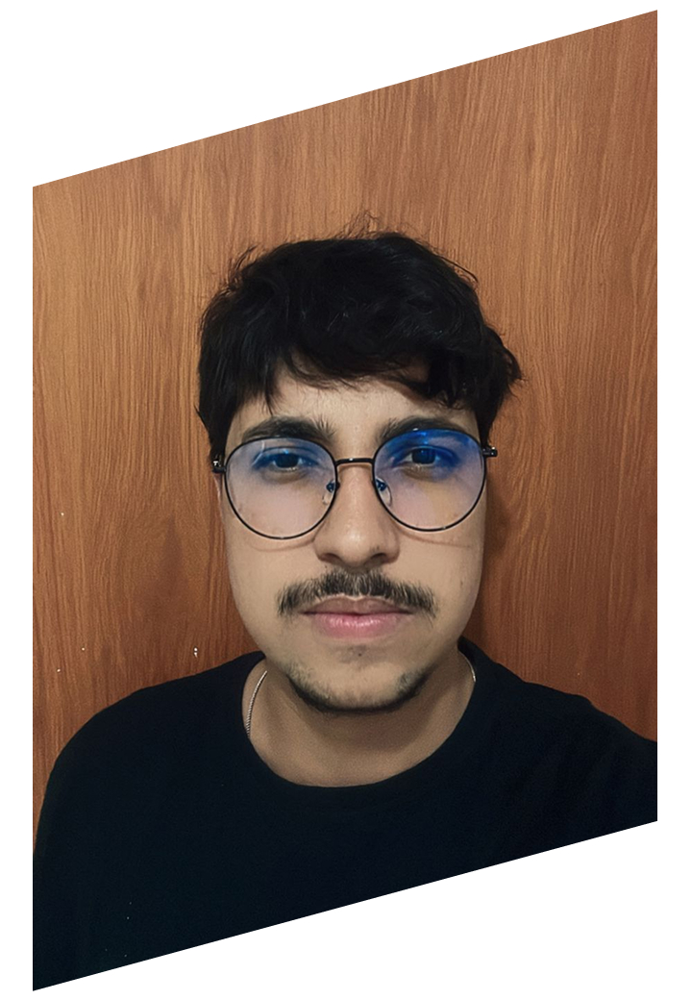

Desenvolvedor
FullStack
Localizado no interior de São Paulo
Experiência
Sou Desenvolvedor Front-end com experiência em pequenos projetos utilizando HTML,CSS e JavaScript. Possuo foco em UX/UI Design, criando interfaces intuitivas e funcionais. Atualmente, estou me aprofundando em Java e conceitos de Back-end com o objetivo de transicionar para a área Full Stack.
Projetos:
Este projeto foi construído utilizando HTML, CSS e JavaScript puros. O foco principal foi a implementação da lógica de regras complexas do jogo (movimentação das cartas, empilhamento e detecção de sequências) através de JavaScript, garantindo uma interação suave e um layout responsivo que simula a experiência do jogo de cartas original.
- HTML
- CSS
- JavaScript
Desenvolvi um sistema completo de gerenciamento de dados para uma clínica veterinária, cobrindo o ciclo de vida do paciente e dos serviços prestados.
O sistema possui uma interface Front-end construída com HTML, CSS e JavaScript, focada na usabilidade para o cadastro e visualização de informações.
O Back-end utiliza Node.js para lidar com as requisições, processamento de dados e regras de negócio. A persistência dos dados é realizada através do banco de dados leve SQLite3.
📋 Principais Funcionalidades:
📋 Principais Funcionalidades:
- Cadastro de Animais: Registro de novos pacientes (nome, espécie, raça, tutor, etc.).
- Registro de Serviços: Cadastramento detalhado dos procedimentos e consultas realizadas.
- HTML
- CSS
- JavaScript
- Node.js
- SQLite3
Desenvolvi um sistema de Ponto de Venda (PDV) que gerencia Estoque e Clientes.
Utilizei HTML, CSS e JavaScript no Front-end para a interface de vendas. O Back-end, construído com Node.js e SQLite3, gerencia as transações de venda e a atualização automática do estoque.
- HTML
- CSS
- JavaScript
- Node.js
- SQLite3
Criei um Buscador de Jogos avançado, focado na experiência do usuário e na integração com a IA Gemini (Google).
A aplicação foi desenvolvida puramente no Front-end com HTML, CSS e JavaScript. A lógica de pesquisa e exibição dos dados utiliza um arquivo JSON estático ou simulado para os dados dos jogos.
A funcionalidade chave é a integração direta com a API do Gemini, utilizando JavaScript para:
- Chamar a IA e obter descrições ricas e insights sobre os jogos.
- Processar e exibir as respostas da IA diretamente na interface
- HTML
- CSS
- JavaScript
form
ação
Sou formado em Análise e Desenvolvimento de Sistemas com uma base sólida em arquitetura de software, lógica de programação e gestão de projetos.
-
Superior Tecnologo
Análise e Desenvolvimento
Unimar
de Sistemas -
Curso Intensivo
Front-end HTML,CSS E JavaScript
Origamid -
Curso Intensivo
Desenvolvimento Back-End
Alura
Java
Cursos de especialização:
-
HTML e CSS: O Início (Incluindo 5 Projetos)
7 horas -
Imersão dev com Google Gemini
3 horas
Idiomas:
-
Ingles -
Básico -
Espanhol -
Básico